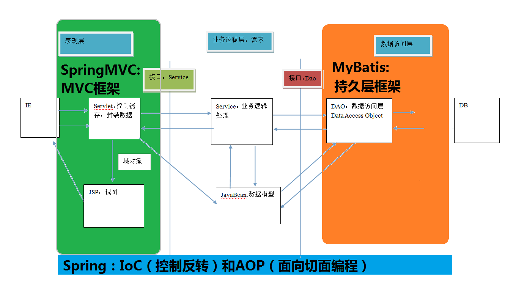

一、三层架构&MVC模型
1.三层架构
三层架构中，每一层各司其职，接下来我们就说说每层都负责哪些方面：
表现层：
也就是我们常说的web层。它负责接收客户端请求，向客户端响应结果，通常客户端使用http协议请求
web 层，web 需要接收 http 请求，完成 http 响应。
表现层包括展示层和控制层：控制层负责接收请求，展示层负责结果的展示。
表现层依赖业务层，接收到客户端请求一般会调用业务层进行业务处理，并将处理结果响应给客户端。
表现层的设计一般都使用 MVC 模型。（MVC 是表现层的设计模型，和其他层没有关系）
业务层：
也就是我们常说的 service 层。它负责业务逻辑处理，和我们开发项目的需求息息相关。web 层依赖业
务层，但是业务层不依赖 web 层。
业务层在业务处理时可能会依赖持久层，如果要对数据持久化需要保证事务一致性。（也就是我们说的，
事务应该放到业务层来控制）
持久层：
也就是我们是常说的 dao 层。负责数据持久化，包括数据层即数据库和数据访问层，数据库是对数据进
行持久化的载体，数据访问层是业务层和持久层交互的接口，业务层需要通过数据访问层将数据持久化到数据库
中。通俗的讲，持久层就是和数据库交互，对数据库表进行曾删改查的。
2.MVC模型
Model （模型） ：
通常指的就是我们的数据模型。作用一般情况下用于封装数据。
View （视图） ：
通常指的就是我们的 jsp 或者 html。作用一般就是展示数据的。
通常视图是依据模型数据创建的。
Controller （控制器） ：
是应用程序中处理用户交互的部分。作用一般就是处理程序逻辑的。
二、SpringMVC概述
- SpringMVC 是一种基于 Java 的实现 MVC 设计模型的请求驱动类型的轻量级 Web 框架，属于 SpringFrameWork 的后续产品，已经融合在 Spring Web Flow 里面
- 
- springMVC和Strus2的优劣分析
共同点：
它们都是表现层框架，都是基于 MVC 模型编写的。
它们的底层都离不开原始 ServletAPI。
它们处理请求的机制都是一个核心控制器。
区别：
Spring MVC 的入口是 Servlet, 而 Struts2 是 Filter
Spring MVC 是基于方法设计的，而 Struts2 是基于类，Struts2 每次执行都会创建一个动作类。所
以 Spring MVC 会稍微比 Struts2 快些。
Spring MVC 使用更加简洁,同时还支持 JSR303, 处理 ajax 的请求更方便
(JSR303 是一套 JavaBean 参数校验的标准，它定义了很多常用的校验注解，我们可以直接将这些注
解加在我们 JavaBean 的属性上面，就可以在需要校验的时候进行校验了。)
Struts2 的 OGNL 表达式使页面的开发效率相比 Spring MVC 更高些，但执行效率并没有比 JSTL 提
升，尤其是 struts2 的表单标签，远没有 html 执行效率高。
入门程序流程分析

springMVC执行流程原理

入门案例中涉及到的组件
- DispatcherServlet：
- 前端控制器：用户请求到达前端控制器，它就相当于 mvc 模式中的 c，dispatcherServlet 是整个流程控制的中心，由它调用其它组件处理用户的请求，dispatcherServlet 的存在降低了组件之间的耦合性。
- HandlerMapping ：处理器映射器
- HandlerMapping 负责根据用户请求找到 Handler 即处理器，SpringMVC 提供了不同的映射器实现不同的映射方式，例如：配置文件方式，实现接口方式，注解方式等。
- Handler ：处理器
- 它就是我们开发中要编写的具体业务控制器。由 DispatcherServlet 把用户请求转发到 Handler。由Handler 对具体的用户请求进行处理。
- HandlAdapter：处理器适配器
- 通过 HandlerAdapter 对处理器进行执行，这是适配器模式的应用，通过扩展适配器可以对更多类型的处理器进行执行。
- View Resolver ：视图解析器
- View Resolver 负责将处理结果生成 View 视图，View Resolver 首先根据逻辑视图名解析成物理视图名即具体的页面地址，再生成 View 视图对象，最后对 View 进行渲染将处理结果通过页面展示给用户
- View ：视图
- SpringMVC 框架提供了很多的 View 视图类型的支持，包括：jstlView、freemarkerView、pdfView等。我们最常用的视图就是 jsp
- <mvc:annotation-driven> 说明
- 在 SpringMVC 的各个组件中，处理器映射器、处理器适配器、视图解析器称为 SpringMVC 的三大组件
三、RequestMapping注解
- 概念：用于建立请求 URL 和处理请求方法之间的对应关系。
- 属性：
- value：用于指定请求的 URL。它和 path 属性的作用是一样的。
- method：用于指定请求的方式。
- params：用于指定限制请求参数的条件。它支持简单的表达式。要求请求参数的 key 和 value 必须和配置的一模一样。
- headers：用于指定限制请求消息头的条件
四、请求参数的绑定
- 绑定机制
- 表单提交的数据都是k=v格式的 username=haha&password=123
- SpringMVC的参数绑定过程是把表单提交的请求参数，作为控制器中方法的参数进行绑定的（反射实现）
- 要求：提交表单的name和参数的名称是相同的
- 基本类型参数 ：
- 包括基本类型和 String 类型
- get方法请求乱码原理
- POJO 类型参数 ：
- 包括实体类，以及关联的实体类
- 数组和集合类型参数 ：
- 包括 List 结构和 Map 结构的集合（包括数组）
- 自定义类型转换器
- 表单提交的任何数据类型全部都是字符串类型，但是后台定义Integer类型，数据也可以封装上，说明Spring框架内部会默认进行数据类型转换
- 在控制器中使用原生的ServletAPI对象
- 只需要在控制器的方法参数定义HttpServletRequest和HttpServletResponse对象
五、常用注解
- RequestParam注解
- 作用：把请求中的指定名称的参数传递给控制器中的形参赋值
- 属性：
- value：请求参数中的名称
- required：请求参数中是否必须提供此参数，默认值是true，必须提供
- RequestBody注解
- 作用：用于获取请求体的内容（注意：get方法不可以）
- 属性：
- required：是否必须有请求体，默认值是true
- PathVariable注解
- 作用：拥有绑定url中的占位符的。例如：url中有/delete/{id}，{id}就是占位符
- 属性
- value：指定url中的占位符名称
- Restful风格的URL
- 请求路径一样，可以根据不同的请求方式去执行后台的不同方法
- restful风格的URL优点
- 结构清晰
- 符合标准
- 易于理解
- 扩展方便
- RequestHeader注解
- 作用：获取指定请求头的值
- 属性：
- value：请求头的名称
- CookieValue注解
- 作用：用于获取指定cookie的名称的值
- 属性：
- value：cookie的名称
- ModelAttribute注解
- 作用
- 出现在方法上：表示当前方法会在控制器方法执行前先执行。
- 出现在参数上：获取指定的数据给参数赋值。
- 应用场景
- 当提交表单数据不是完整的实体数据时，保证没有提交的字段使用数据库原来的数据。
- SessionAttributes注解
- 作用：用于多次执行控制器方法间的参数共享
- 属性
- value：指定存入属性的名称
- model对象会将数据存储到request域对象当中
配置/和/*的区别：
/:不拦截jsp，拦截除了jsp之外所有资源
/*:拦截所有的资源
六、Model,ModelMap,ModelAndView
七、过滤器和拦截器
过滤器是 servlet 规范中的一部分，任何 java web 工程都可以使用。
拦截器是 SpringMVC 框架自己的，只有使用了 SpringMVC 框架的工程才能用。
过滤器在 url-pattern 中配置了/*之后，可以对所有要访问的资源拦截。
拦截器它是只会拦截访问的控制器方法，如果访问的是 jsp，html,css,image 或者 js 是不会进行拦截的。
重写拦截器的方法：
return true：放行，执行下一个拦截器，如果没有，执行controller中的方法
return false：不放行
拦截器接口中的方法：
preHandle:controller执行前执行该方法
postHandle:在controller执行后执行该方法
afterHandle:在success.jsp页面执行后执行该方法
静态资源直接从tomcat的defaultServlet经过，不会经过springmvc的前端控制器